Page 1 / 原始页码 441
第 22 章 物种起源
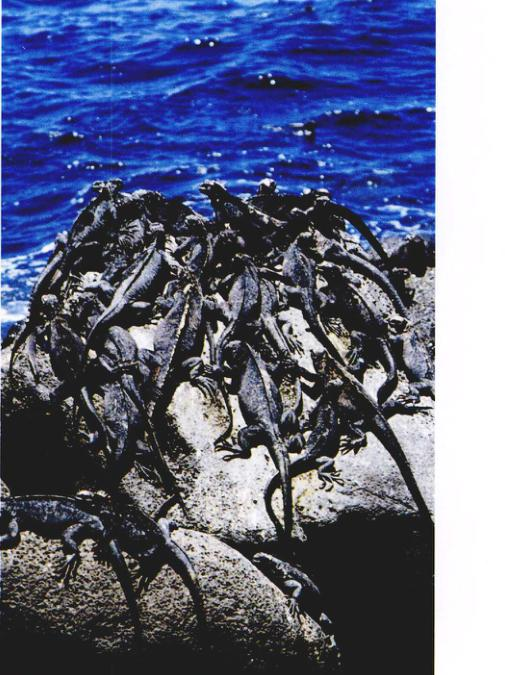
图 22.1 孤岛上一群加拉帕戈斯海鬣蜥正在晒太阳 地理隔离是怎样导致新物种形成的呢？
22.4.7 生物学物种概念存在的问题 这个概念并不像我们一开始想象的那样具有普适性。
尽管达尔文为他的书命名为《物种起源》，但是实际上他没有回答物种是怎样产生的这个被他称为“谜中之谜”的问题。他讨论的是关于自然选择引起进化，即一个物种是怎样进化以适应不断变化的环境这一问题。尽管适应过程对进化生物学非常重要，但它并没有解释一个物种是如何变成另一个物种的（图 22.1），更不能解释一个物种是怎样产生多个物种的。于是我们会想到，适应也许多与物种形成过程有关，但是目前看来这是错的。
Page 2 / 原始页码 442
22.1 物种是进化的基本单位
22.1.1 物种的概念
在讨论一个物种是怎样形成另一个新物种之前，我们需要明确一个什么叫物种。尽管物种的定义对于进化生物学家来说非常的重要，但这个问题还仍未完全解决，目前还是个有很多争论的主题。但是，任何一个物种的概念都必须能解释两个现象：一是在同一地区物种间的差异问题，二是在地理上分开的同一物种种群间的关系问题。
1) 同域种间的差异
在你的阳台或是后院放一些鸟食，将会引来很多不同种类的鸟（特别是如果你放了许多种不同的食物）。比如，在美国的中西部，按常规你会看到北美红雀 (cardinal)、蓝松鸦 (blue jays)、山岗啄木鸟 (downy woodpeckers)、家雀 (house finches) 等，如果在夏天的话你还可能看到蜂鸟（图 22.2）。可能花上好几天时间仔细观察，很快你就可以辨别出很多种鸟。这是因为这些在同一地方（术语叫“同域” (sympatric)）生活的鸟类是不同的个体，它们外形不同，栖息的生态位不同，行为也不同。这种现象不止在鸟类上发生，而且在大多数地方的其他生物上也存在。
有时，这一地区的两个种类可能会因相像，我们叫它们姊妹种 (sibling species)。但是，在大多数情况下，我们不能依靠观察一眼区分它们。当分析其交配鸣叫或化学分泌物时，我们发现它们其实有很大不同。一句话，尽管我们很难区分它们，但动物自己却没这种困难。
2) 种内的地理变异
在作为分类学单位的种内，不同地区的种群或多或少有些差别。这些不同的个体在分类学上归为亚种 (subspecies) 或变种 (variety)（“种族” (race) 这个含糊的词也有类似的意思，但现在通常已经不再用了）。在两个亚种生活区域相邻地区的个体会混合有两个亚种的特征。换句话说，虽然地理距离很远的地方表面上是不同的，但在两个亚种中常会有具有两者中间特征的过渡种群街接（图 22.3）。
3) 生物学种的概念
什么概念既包括了同域物种的差异又包括了同一物种的地理种群之间的联系？一种明显的可能是每个物种都只与同个体交换基因物质。如果同域物种间可以交换基因，那么我们可以想到这些种将很快因为基因库 (gene pool) 均质化而会失去其自身的特征。反之，同一物种在不同地方生活的种群可以通过基因流动统一为同一物种的成员。依据这一思想，著名进化生物学家 Ernst Mayr 归纳出了生物学种 (biological species) 的概念：
“物种是超越地理上的界限的，实际或潜在在地理互相交配而又与其他种类存在生殖隔离的自然种群的总称。”
换句话说，生物学种的概念是说一个种是能够互相交配而且产生有生育能力的后代的所有个体的总和。反过来说，不能产生有生育能力的后代就叫生殖隔离 (reproductively isolated)，这样的个体属于两个种。
在偶然情况下，不同种的个体也可以相互交配，这叫做杂交 (hybridization)。如果这两个物种是生殖隔离的，那么就不会有后代产生；即使产生了后代，这些后代也不是健康或是不可育的。这样，一个种的基因通常不可能进入另一个种的基因库。
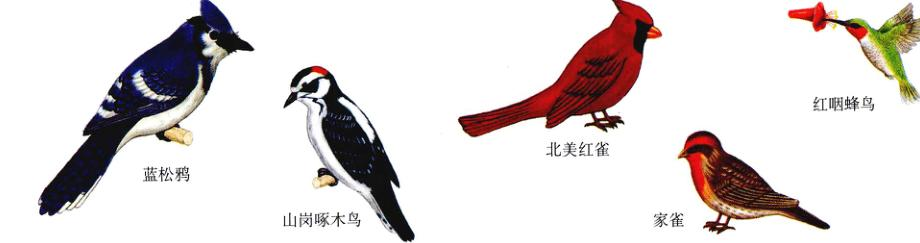
图 22.2 美国中西部常见的鸟 没有人会认为这些鸟是同一种鸟。每一种鸟在生态、行为和外形上都与其他种不同。
Page 3 / 原始页码 443
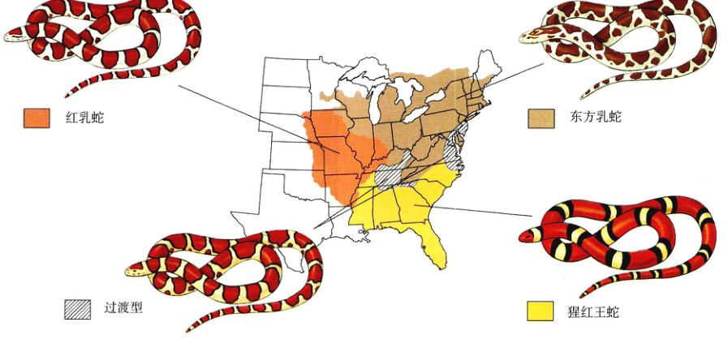
图 22.3 乳蛇 Lampropeltis triangulum 的地理变种 尽管不同亚种之间的表型相差很大，但它们通过过渡种群相联系。
4) 应用生物学种的概念所遇到的问题
实践证明生物学种的概念可以有效地解释自然界中种的存在。然而，这个概念在应用上也有困难。比如，我们很难把这个概念应用于生活在不同地区的（称为异域的 (allopatric)）生物。因为这些不同地区的生物永远也不会相见，我们就无法在自然条件下观察它们到底能否互相交配。尽管可以通过实验验证它们是否可以杂交产生可育的后代，但这种信息并不足以作为鉴定是否同种的依据。因为很多在自然条件下互不相交配共存的种，在实验室或动物园的人工条件下可以很容易地杂交。因此，评判异域生活的生物是否同种最终是靠判断力。
此外，这个概念的适用范围远没有它的名字暗示的那么大。很多生物都没有性，繁殖不需交配，对这些生物而言生殖隔离毫无意义。
尽管名字这么叫，这个概念其实只是一个动物学的种的概念，不容易应用于植物。即便对于动物来说，生物学种的概念也对某些动物比其他动物适用得更好。在22.4节中将看到，生物学家们最近重新评估这个概念和其他研究物种的方法。
22.2 物种通过生殖隔离保持其遗传特征
22.2.1 合子前隔离机制
物种是怎样保持其各自特点的呢？生殖隔离机制可分为两类：阻止合子形成的合子前隔离机制 (prezygotic isolation mechanism) 和在合子形成后抑制其发育的合子后隔离机制 (postzygotic isolation mechanism)。接下来的部分，我们将讨论这两大类中各种隔离机制，举例阐明这些隔离机制是如何起作用而使物种保持它们的特性。
1) 生态隔离
即使两个种生活在同一地区，它们也会利用环境的不同部分，由于不能相遇之间不可能发生杂交。例如，在印度，直到大约 150 年前，狮子和老虎的分布范围还依然是重叠的。但尽管如此，我们也从没发现任何自然杂交的记录。狮子主要栖息在开阔的草原上，一般以狮群为单位捕食；而老虎则是森林中的独居者（图 22.4）。由于生态和行为上的差异，狮子和老虎之间很少发生直接的接触，即使它们的分布范围有几千平方千米的重叠。
在另一个例子里，两种蟾蜍，Bufo woodhousei 和 B. americanus，它们的分布范围是部分重叠的。尽管这两种蟾蜍可以产生健康的杂种，但它们很少相互杂交，因为它们在不同的生境繁殖。Bufo woodhousei 一般都在小溪
Page 4 / 原始页码 444
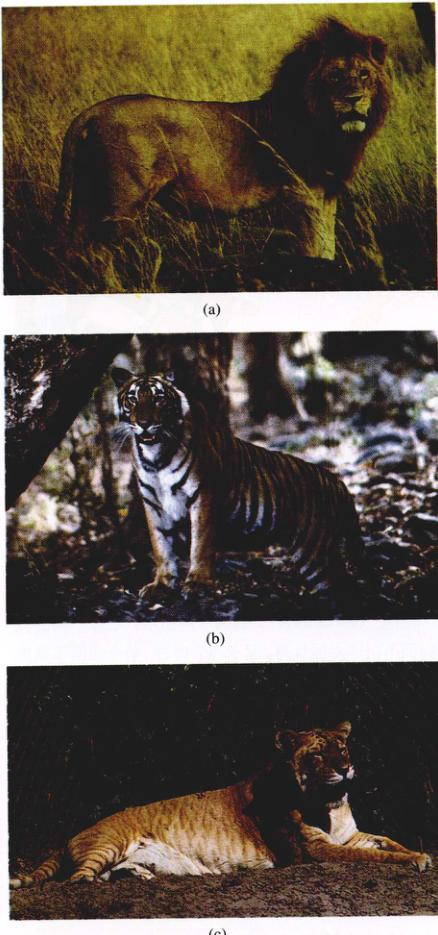
图 22.4 狮和虎是生态隔离的 在印度，狮和虎的分布范围经常是有重叠的。尽管如此，在野生条件下狮和虎不会相互交配，因为它们利用生境的不同部分。(a) 狮子生活在开阔的草地上。(b) 老虎是丛林中的独居者。(c) 狮和虎的杂种，例如虎狮，已经成功在笼中产生了，但杂交在野外是不会出现的。
中繁殖，而 B. americanus 一般却是在雨后的泥水坑中生殖。还有一个相似的情况，佛罗里达两种蜻蜓的分布也是部分相互重叠的。然而，蜻蜓 Progomphus obscurus 生活在河或者小溪的附近，而 P. alachuensis 却生活在湖的附近。
在植物中也类似的的情况。山谷栎 Quercus lobata 和胭脂栎 Q. dumosa 是加利福尼亚亚分布很广的两个物种树，它们的分布区域也是互相重叠的。山谷栎是一种优美的落叶树，高度可达 35 m，一般生长在缓坡地带土壤肥沃的开阔草地上或者是生长在谷底。相比之下，胭脂栎是一种常绿灌木，高度通常只有 1~3 m。它们经常形成稠密的灌木丛，一般生长在土壤贫瘠的陡峭斜坡上。这两种树的杂确确实存在而且可以繁殖，但这这种情况很少发生。这两物种的生存环境有很大差别，使得它们不可能出现在同一块地方，而且也不存在适合杂种生长的过渡生境。
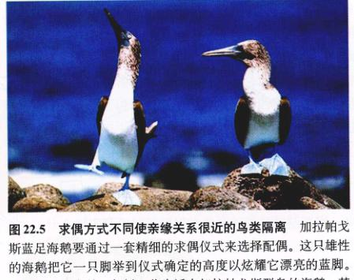
图 22.5 求偶方式不同使亲缘关系很近的鸟类隔离 加拉帕戈斯蓝足海鲣鸟要通过一套精细的求偶仪式来选择配偶。这只雄性的海鲣把它一只脚举到仪式确定的高度以炫耀它漂亮的蓝脚。其他种类的海鲣，包括一些生活在加拉帕戈斯群岛的海鲣，其显示的因为都有很大不同。
2) 行为隔离
在第27章，我们将讨论某些动物优雅的求爱和交配仪式。有些亲缘关系很近的动物如鸟类的求爱方式是不同的，这使得他们自然条件下即便是生活在一起也能保持种的不同（图 22.5）。举个例子，长尾凫和野鸭是北美最常见的两种淡水鸭。在人工条件下，这两中鸭可以产生有生育能力的杂种后代，但在自然条件下，它们的巢紧挨着，但很少杂交。
在夏威夷群岛有超过 500 种果蝇。这可能是世界同属物种最集中的地方了。果蝇在世界的任何地方都有分布，但只有夏威夷果蝇的外表和行为才这样的千奇百怪。这里的很多种果蝇和其他果蝇截然不同，它们的很多行为有时只能用“古怪”这个词来形容。
夏威夷果蝇的寿命一般较长，而且与大陆上的果蝇相比，它们的体型都比较大。雌性的果蝇看起来还比较相像，而雄性的果蝇就千奇百怪了。雄性的果蝇展示出复杂的领域行为和精细的求偶仪式。
不同种类的夏威夷果蝇的交配方式是不同的，这对维持其特种的特征有十分重要的意义。比如，D. heteroneura 和 D. silvestris 之间尽管有很多区别，但亲缘关系非常近，因此它们的杂种是完全可育的。在夏威夷岛的大部分地区，我们可以看到这两种果蝇，但只能在一个地方看到它们的杂种。它们独特而复杂的求偶特征在保持其种的差异中起了重要作用。
Page 5 / 原始页码 445
3) 其他合子前隔离机制
(1) 时间隔离：Lactuca graminifolia 和 L. canadensis 这两种野生莴苣，共同生长在美国东南部路边上。通过实验我们可以很容易地得到它们的杂种，而且杂种是可育的。但在自然界中这种杂交却很少见。因为 Lactuca graminifolia 在早春开花，而 L. canadensis 在夏天开花。在很偶然的情况下，它们的花期可能会部分重叠，这时它们之间才可能会产生杂种，有时会在当地大量出现。
很多亲缘关系相近的两栖动物繁殖期都不同，以避免产生杂种。比如，在美国，Rana 属的 5 种蛙经常生活在一起，但因为它们的繁殖高峰期互不相同，它们之间很少出现杂种。
(2) 机械隔离：很多亲缘关系相近的动物由于器官结构的不同而不能杂交。除了比较明显的特征如大小外，雄性个体的生殖器官结构也非常重要——它们可能是不相容的。在很多昆虫和其他的节肢动物中，生殖器官，尤其是雄性的生殖器官，有很大不同，以至于被作为分类的基本依据。
与动物的情况类似，亲缘关系比较近的植物的花在比例和结构上都有显著的差异。这些差异限制了不同植物之间的传粉。比如，蜜蜂在一种植物的花上采蜜时会身体的特定部位携带花粉；当这只蜜蜂到达另一种植物花的时候，如果携带花粉的部位不能和这种花的柱头相接触的话，就不能完成传粉。
(3) 阻止配子融合：在直接把配子排放到水中的动物中，不同种的精子和卵子不一定能互相识别。很多的陆生动物不能成功地互相杂交，是因为一种动物的精子在另一种动物的生殖道中可能无法正常发挥其功能，这样受精作用就不能发生。在植物中，不同种杂交过程中花粉管的生长可能会被阻断。在植物和动物中，这种生殖隔离机制阻止了配子的结合，即使已经成功地完成了交配。

图 22.6 豹蛙的合子后生殖隔离 数字代表不同地理区域的蛙种类：(1) Rana pipiens; (2) Rana blairi; (3) Rana utricularia; (4) Rana berlandieri。从外部特征上来看，这4种蛙都十分的相似。直到发现它们之间的某些杂种不能产生正常的胚时，人们才开始怀疑它们属于不同的分类地位。随后的实验表明，这4种蛙的生殖细胞有很大的区别，说明在它们的生殖隔离机制中同时存在合子前和合子后隔离机制。
Page 6 / 原始页码 446
22.2.2 合子后隔离机制
到目前为止，我们讨论的所有因素都是通过阻止杂交起作用。如果杂交确实发生了，而且产生了合子，仍有其他很多因素可以阻止合子发育成为功能正常的育个体。任何一个物种的发育过程都是很复杂的过程。在杂种中，其两个亲本的遗传互补性可能会有很大的差异，以至于在胚胎发育过程中不能一起起作用。例如，绵羊和山羊杂交产生的胚在发育早期阶段就会死亡。
生活在美国东部的豹蛙 (Rana pipiens) 是一群极为相似的物种，在很长一段时间内都被认为是一个单一的种（图 22.6）。仔细研究发现，虽然这些蛙有非常相似的外形，但是，它们之间却极少出现成功的交配。因为受精卵不能正常发育。即使在实验室中，很多杂种也无法成活。
像这类只能通过杂交实验来辨别相似物种的例子，在植物中很常见。有些时候，我们可以以这些杂种胚发育早期移植到人工环境下生长，当这些杂种能得到充足的营养供应以弥补其遗传上的自身缺陷和不育性的时候，可能会正常完成它们的发育。
但是，即便杂种成功地度过了胚胎的阶段，它们也不一定能正常发育。如果这些杂种比它们的亲代生活力差，那么，在大自然中它们几乎肯定会被淘汰。即便它们有力气很强壮，比如骡子——马和驴的杂种，也不可能具有生育能力，因此不能产生后代。杂种的不育性可能源于其生殖器官的异常发育、不同亲本的染色体无法正常配对或者其他一些原因。
22.3 关于物种形成，我们已经了解很多
在进化领域中一个很古老的问题是：一个祖先物种是怎样分化成两个不同的种的？如果我们用生殖隔离来定义种的概念的话，那种物种形成的过程就等同于生殖隔离机制的进化过程。那么生殖隔离机制是怎样进化的呢？
22.3.1 生殖隔离是进化的副产物
一些生殖隔离机制最初是由于生殖隔离以外的其他某些原因产生的。比如，迁移到新栖息地的种群将进化出对新环境的适应，因此，这个种群的个体可能永远不会遇见原来栖息地种群的个体。即便它们相遇了，在新栖息地生活的种群可能已经形成了新的表现型和行为特征，这使得两个种群的个体不会互相识别成为潜在的配偶（图 22.7）。由于这个原因，一些生物学家认为“隔离机制”这个说法是有歧义的，可能使人误认为这些特征是为了在基因上隔离物种而进化的，但大多数情况下这是错误的。
1) 选择能增强隔离机制的作用
物种的形成是一个连续的过程，这是我们可以理解的，因为在所有的分布都存在中间过渡类型。如果部分分化的种群个体相互接触，它们仍然可以自由地交配，在基因交换使种群同化的过程中它们之间的差异可能会完全消失。相反，如果这两个种群是生殖隔离的，那么基因交换将不会发生，最后，这两个种群演化成了两个不同的物种。
然而，可能会存在一种过渡的中间状态，生殖隔离已经部分地进化产生了，但还不能完全起作用，结果杂交还是可能会偶然发生。如果杂种是不育的，或者比它们的亲代更不适应其生存的环境，那么这个杂种就是劣势的。于是，选择会倾向于其亲本的等位基因而避免杂交，因为避免杂交的个体能更成功地将基因传给下一代。结果是，合子前生殖隔离机制不断地完善提高，直到最后这两个种群的生殖完全隔离，这个过程叫做强化效应 (reinforcement)。也就是说一这一开始不完全的生殖隔离在选择作用下增强，最后产生了完全的生殖隔离。
但是，增强效应不是不可避免的。当生殖隔离不完全的种群相遇时，在这两个种群之间将会出现基因流动。尽管杂种相对于纯种来说可能处于劣势，但它们不一定是完全不活或不育的（否则这两个种群就是完全生殖隔离的了）。因此，当这些杂种和两个种群中的个体杂交时，就在它们之间起到了一个沟通两个种群基因库的通道作用。这样，这两个种群之间的基因差异就会逐渐消失。于是，一场赛跑开始发生：生殖隔离能否在基因流动消除种群差异之前达到完善的水平？尽管有不同的实验结果，但是很多人相信增强效应是一种不那么常见的现象。
2) 自然选择在物种形成中的作用
自然选择在物种形成的过程中起什么作用呢？当然，自然选择会倾向于使生殖隔离愈趋完善而导致增强效应。但是，我们已经看到增强效应不那么常见。那么自然选择是否参与了生殖隔离机制的最初进化呢？
Page 7 / 原始页码 447
3) 随机改变会造成生殖隔离
我们在第20章中曾讨论过，由于纯粹的随机因素种群也可以发生分化。小种群中的遗传漂变现象、建立者效应，以及瓶颈效应都可能引起性状的改变，进而产生生殖隔离。例如，在夏威夷群岛上，果蝇属 (Drosophila) 中亲缘关系很近的种经常采取不同的求偶方式。某些果蝇迁移动另外的岛上将产生建立者效应，因为这种迁移可能是由一只或几只果蝇——其中只有一只是受精的雌果蝇——被一场意外的暴风雨吹到了一个新岛上。这种建立者效应将导致新老种群求偶方式的变化。只要经过足够长的时间，任何两个隔离的种群都会因为遗传漂变而分化。某些情况下，这种随机分歧可能会影响有关生殖隔离的性状，从而形成新物种。
4) 适应与物种形成
但是，适应和物种形成可能在很多方面是相互关联的。当物种适应不同的生存环境时，会积累很多足以导致生殖隔离的差异。例如，如果一群果蝇适应了湿润的环境，而另一群适应了干燥的环境，那么它们在生理和感觉特征上将进化出许多差异，这些差异可能加速生态和行为上的隔离，使得它们产生的杂种不能适应其中任何一种环境。
选择也会直接地影响生殖行为。雄性蜥蜴在向异性求爱时会伸出其喉部下方有颜色的喉垂 (dewlaps)（图 22.8）。一只蜥蜴能否看到另一只蜥蜴的喉垂不仅取决于喉垂的颜色，还取决于出现的环境。因此，颜色很浅的喉垂在阴暗的森林中会更反光，而暗色的喉垂在明亮的开阔地上更明显。因此，当一只蜥蜴出现在新生境时，雄性蜥蜴的喉垂如果显，就不能吸引异性，自然选择会倾向于改变喉垂的颜色。除此之外，不同蜥蜴还通过喉垂颜色判断对方是否属于自己的种族。因此，交配行为的适应性变化可能偶然导致了物种形成的结果。
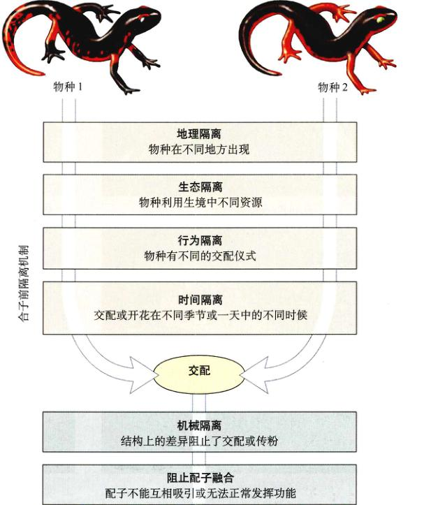
图 22.7 生殖隔离机制 很多种机制都可以阻止不同个体之间的成功生殖。
Page 8 / 原始页码 448
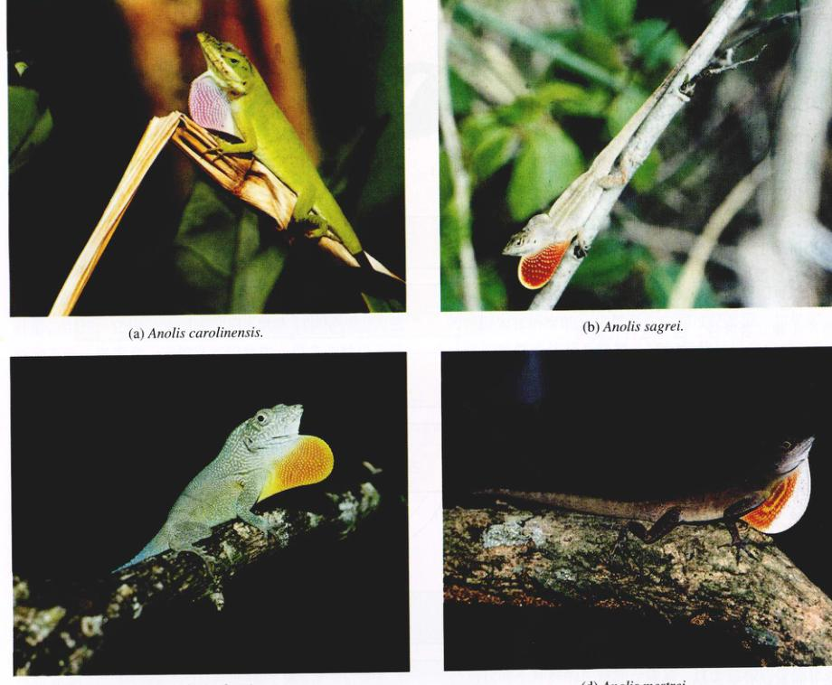
图 22.8 不同种加勒比海蜥蜴的喉垂 雄性蜥蜴用它们的喉垂来显示它们的领域以及求偶。即便是生活在一起的种，它们的喉垂也是有所不同的，这是它们鉴别本种的标志之一。某些喉垂在开阔的栖息地很显眼，而另一些在阴暗的地方很显眼。
实验科学家曾对果蝇和其他生物作过将种群分在几个不同的实验培养箱中，然后检验进化出多少生殖隔离的实验。结果表明，种群内的遗传漂变可以引起一定程度的生殖隔离，但一般来，只有当我们将这些种群适应不同的实验室环境时（比如温度或食物的类型），生殖隔离才会迅速进化。
22.3.2 地理物种形成
物种的形成要经历两个过程。首先，最初的单一群体必须出现分歧；其次，必须进化形成生殖隔离以保持这些差异。我们已经看到，这个过程中的一个难点在于种群间基因流动的同化作用不可以不断地消除种群中存在的差异，而不管这是由遗传漂变还是自然选择造成的。当然，基因流动只在种群相互接触时出现。进化生物学家久地认为物种形成更像是发生在地理隔离的种群。
Page 9 / 原始页码 449
1) 异域分化是物种形成的基本方式
Ernst Mayr 是第一个支持异域分化原理的生物学家。通过对各种生物及其生存地点进行分析，他明确证明了地理上分隔的种群似乎更可能含有导致进化上物种形成的本质差异。例如，在新几内亚岛上的地形和气候差异很大，但岛上巴布亚翠鸟 Tanysiptera hydrocharis 的变异却很小。相比之下，被隔离在附近岛屿上的种群彼此件却有明显的差异，而且明显不同于新几内亚岛本岛上的种群（图 22.9）。
其他很多的例子也表明物种的形成是异域的。假如你能想到，由于遗传漂变和选择的作用，隔离的种群会发生分化，这个结果其实并不令人惊奇。但是，另一个问题又出现了：地理隔离是物种形成的必要条件吗？
2) 物种能否同域形成现在还有争议
就像我们在第20章中看到的一样，分裂性选择会使种群包含两种表现型不同的个体。有人也许会想，如果这种选择的力量足够强的活，这两中种表现型的个体最终会分化成两个新种。但是，在两种表现型的个体进化为两个种之前，它们必须能够形成生殖隔离机制。因为这两种表现型个体最初在生殖上完全没有隔离，所以，它们之间的基因交换将会阻止在交配偏好或其他生殖隔离机制上出现的遗传趋异 (genetic divergence)。结果，这两个种个体只能停留在种群内的多态性水平上。因此，大多数生物学家认为同域物种形成是一个小概率事件。
然而，最近几年出现的很多新事例，很难用除了同域物种形成之外的其他理论解释。比如，喀麦隆的火山口湖 Barombi Mbo 是一个非常小的地方，其环境状况在生态上是均匀的，几乎不可能存在湖内的隔离。然而，11 种非常相近的丽鱼 (cichlid) 生活在这个湖中，它们彼此的进化关系远比火山口外的任何物种都要接近。因此，最合理的解释就是一个祖先种侵入了这个火山口，随后多次发生了同域物种形成。
3) 遗传性变是物种形成的基础
一个种发生多少分歧才能形成一个新种呢？需要多少基因发生变异呢？从达尔文文起就形成的——种传统观念认为新种的形成是由不断积累的微小基因变异造成的。尽管没有人怀疑多种物种是通过这种渐进的方式形成的，但分子生物学等新技术的应用表明，至少在某些情况下，新物种的形成只涉及及极少数的几个基因。通过研究美国西部的两种沟酸浆（玄参科）植物，研究人员发现尽管表面看上去有很大差异，其实这两种花中仅有少数几个基因是不同的（图 22.10）。应用第19章介绍的基因技术，研究人员发现这两种花的所有主要差异，包括花的形状、颜色、花蜜的产生等都由几个对表型有很大作用的基因决定。因为单个基因的重大作用，这种差异如此大的两个物种只经过很少个步骤进化产生。
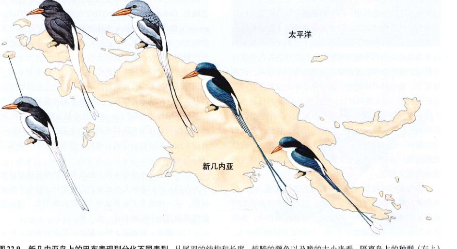
图 22.9 新几内亚岛上的巴布表现型分化不同表型 从尾羽的结构和长度、翅膀的颜色以及喙的大小来看，隔离岛上的种群（左上）与大陆上的种群截然不同，而大陆上的种群之间差异不大。
Page 10 / 原始页码 450
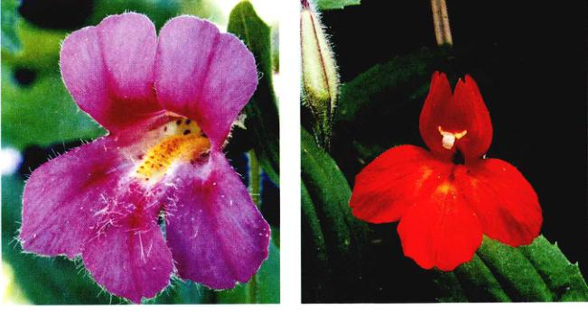
图 22.10 两个种之间的区别可能是由少数有很重要作用的基因决定的 (a) Mimulus lewisii 具有粉红的花和很淡的花蜜，以吸引大黄蜂作为传粉者。(b) 相比之下，M. cardinalis 的花是红色的，花蜜也比较稀，是一种典型的由蜂鸟进行传粉的花。这些花的颜色和形状的差异是由少数有很大作用的基因决定的。
4) 多倍体在物种形成中的作用
在植物中，不育的个体可以通过多倍体化 (polyploidy)，即在原来的杂种个体中染色体数目加倍，繁殖出可育的个体。一个多倍体细胞、组织或是个体都有两个以上的染色体组。所有物种都可以自发适度地产生多倍性的细胞或组织，尽管在很多情况下它们会被迅速地消除。杂种大多不育的原因在于它们分别从父本和母本得到的染色体不能正常配对。当杂种的染色体数目加倍时，这个杂种的每条染色体都会有一个副本。这种情况下，染色体可以配对，这个多倍体的杂种也就可以进行生殖了。有人曾估计过，在总共 260 000 种植物中有大约一半在历史上经厉过多倍体化阶段，其中包括许多重要的经济作物，如小麦、棉花、烟草、甘蔗、香蕉和马铃薯等。可以想象，由于基因上的重大变化，多倍体对于生存面前，多倍体具有更大的优势，这也是多倍体在进化中的意义所在。
因为多倍体植物不能与其祖先种进行繁殖，因此生殖隔离只需一步就可以进化完成。因此，多倍体化无疑是同域物种形成的一种方式。尽管在动物界中多倍体化物种形成不如植物中常见，但在某些动物如昆虫、鱼、蝾螈中也会发生。
22.4 种群簇反映了快速进化
22.4.1 达尔文雀
进化最明显的表现之一，就是一组由共同祖先适应不同生态位而产生的亲缘关系非常接近的物种。这种适应辐射 (adaptive radiation) 现象在加拉帕戈斯 (Galápagos) 群岛上 13 种达尔文雀中就存在。假定达尔文雀的祖先比其他鸟类更早到达这片岛屿，大陆上各种鸟类所占据的生态位在岛上还都未被占据，作为这片小生境的新来者，它们开始采用新生活方式，从而受到各种不同选择压力的影响。在这种环境下，再加上加拉帕戈斯群岛各岛之间的地理隔离，这批最早的雀很快就分化为不同选择压力影响。其中一些进化为独特的种群，这些种占据了加拉帕戈斯群岛的各个生态位（图 22.11），与占据大陆上相同生态位的鸟类们一同进化。这 13 种雀可分为 4 类。
(1) 地雀：地雀有 6 种。绝大多数的地雀都是以种子为食的。它们喙的大小是与它们所吃种子的大小相适应的。有一种地雀主要以仙人掌花和果为食，因此它的喙要明显比别的长、细。
(2) 树雀：树雀有 5 种，都是以昆虫为食的。其中 4 种的喙非常适于捕食昆虫。啄木鸟雀的喙像凿子一样，用于这种不一般的鸟经常带着小树枝或仙人掌的刺，用于在
Page 11 / 原始页码 451
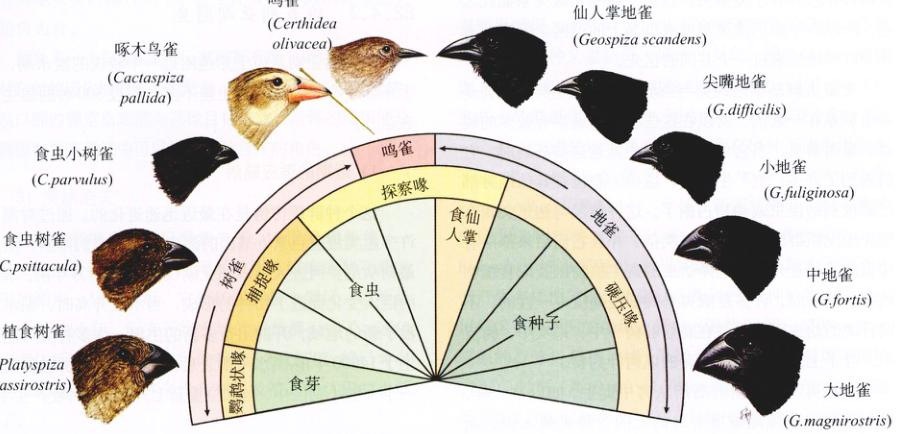
图 22.11 达尔文雀 生活在加拉帕戈斯群岛之一的 Isla Santa Cruz 岛上的 10 种达尔文雀。它们喙的大小和取食习惯都不相同。其中有一些种的喙与大陆上某些其他科鸟类的喙很相似。这种情况的出现大概是因为这这些莺鸟在缺少小型鸟类的生境中进化的缘故。其中啄木鸟雀可以用仙人掌的刺在树皮或烂木头的裂缝中探测食物。科学家们认为这些鸟类都是由共同的祖先进化来的。
很深的缝隙中寻找昆虫。
(3) 鸣雀：这种鸟和大陆上的鸣鸟所扮演的生态角色差不多，它们不断在树叶和树枝上寻找昆虫，它们的喙很纤细，适于鸣叫。
(4) 植食雀：这类雀的喙都非常的粗壮，这样它们就可以把树枝上的嫩芽扭下来。
22.4.2 夏威夷果蝇
第二个关于种群簇的例子便是在前面介绍行为隔离时已经提到过的夏威夷果蝇属。世界上的果蝇至少有 1250 个种，其中四分之一以上只能在夏威夷群岛发现（图 22.12）。尽管对原始植被的大肆破坏使搜寻变得困难，但夏威夷仍能不断发现新的果蝇种类。除了其数量，夏威夷果蝇的特别之处还在于前面已提到的它们形态和行为上的特征。世界上没有任何一个地方的果蝇能与之相比。
与果蝇属亲缘关系非常近的姬果蝇 (Scaptomyza) 在夏威夷也形成了一个种群簇，其种数多达 300 种。也有少数姬果蝇分布在夏威夷以外的其他地方，但这个属最典型的代表都在夏威夷。而且果蝇属和姬果蝇属之间的过渡种也仅存在于夏威夷。这两个属的亲缘关系如此之近，所以科学家们推测夏威夷群岛上的这两个属共有约 800 种蝇都来自一个共同的祖先。
夏威夷群岛本地蛾类与当地的一种土生典型植物是紧密联系系在一起的，所以在这些植被区通常有较多的蝇类。显而易见，当它们最初祖先抵达这些岛屿时，它们遇到了许多“空”生态位，这些生态位在其他地方都已经被别的昆虫或动物占据了。这种情形与达尔文雀在加拉帕戈斯群岛遇到的情况类似，并且它们后来都沿着相似的路径进化。在选择幼虫的寄主植物以及取食植物的哪一部分时，许多夏威夷果蝇都是高度专一性的。不同种类的幼虫可能生活在腐烂的树干中、果实中、树皮中、叶子上或者根部，以树汁为食。
夏威夷不断有新的岛屿从海中诞生，如以往一样，它们会陆陆续续地被原有岛屿上的果蝇入侵。新生岛屿被占领的同时，新物种也逐渐形成。从它们的生态位和群岛的变动时间来看，与达尔文雀相比，夏威夷果蝇有更多的进化机会。夏威夷的果蝇给我们清晰地展示了一个发生在世界各地最不寻常的进化故事。

图 22.12 夏威夷果蝇 夏威夷群岛上的数百种果蝇虽然基因几乎完全相同，但外观上却相差很大。
Page 12 / 原始页码 452
22.4.3 维多利亚湖丽鱼
维多利亚湖是位于赤道附近一个较浅的淡水湖，位于东非中心，大小与瑞士差不多，超过 300 种丽鱼生活在这儿。
1) 近期的适应辐射
这个种群簇仿佛是在最近迅速进化的。通过对湖中许多类细胞色素 b 基因的测序，科学家们推测，丽鱼最初从尼罗河进入维多利亚湖仅仅是在 20 万年前。水位的巨大变化促进了物种的形成，当水位升高时，湖水淹没了新的地域，开辟出很多新的生境。许多种类可能产生于 14000 年前，湖水干涸之后，当时各个种群被隔离在一个个的小湖区中，当水位重新上升时，物种便产生了。
2) 丽鱼多样性
这些小鱼与以此鲈相像，长 5~10 cm (2~10 英寸)，雄鱼颜色变化多端。这些鱼在形态和生态上的多样性是惊人的，尤其是考虑到它们是在如此短的时间内进化出来的。我们可以通过观察它们的食性来感受其类型的巨大丰富性。它们有的滤食淤泥，有的刮取藻类为食，有的取食树叶，有的通过破碎蜗牛壳取食蜗牛，有的通过突袭爬得慢的蜗牛壳，用弯曲的长牙刺向没来得及缩回壳的蜗牛，有的以浮游动物为食，有的以昆虫为食，有的以对虾为食，还有的则以吃鱼类。刮鳞鱼 (scale-scraping)
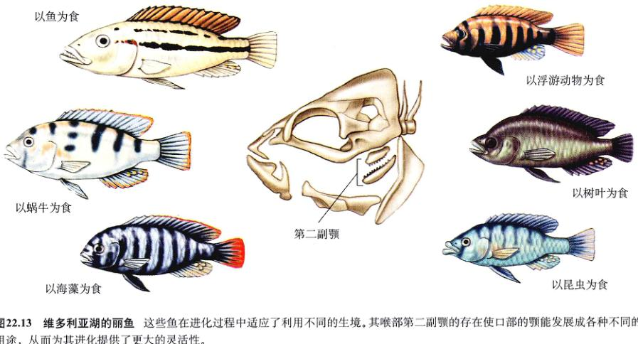
图 22.13 维多利亚湖的丽鱼 这些鱼在进化过程中适应了不同的生境。其喉部第二副颚的存在在使口部的颚能发展成各种不同的用途，从而为其进化提供了更大的灵活性。
Page 13 / 原始页码 453
会将其他鱼类的鳞片刮下，甚至还有的丽鱼以其他鱼类的幼鱼为食。
丽鱼有一个显著的特征：其喉部有第二副颚（图 22.13），这对它们的进化辐射有很大帮助。由于这副颚能处理食物，所以口部的颚空出来能向其他目标进化，最终的结果便是这类鱼在生态系统中可以扮演各种各样的角色。
3) 突然绝灭
许多这样的多样性已经消失了。19 世纪 50 年代，一种肉食吃的经济鱼类尼罗河鲈被引入到维多利亚湖的乌干达湖岸。从那以后，它便扩散到整个湖区，以丽鱼为食。到 1990 年，所有开阔水域的丽鱼都灭绝了，还包括许多生活在岩石浅水区的种类。超过 70% 的已命名的丽鱼灭绝了，还有许多没有来得及被人认识的也消失了。
22.4.4 新西兰高山毛茛
从前面的介绍我们可以看出，周期性隔离促成了加拉帕戈斯雀、夏威夷果蝇和维多利亚湖丽鱼的适应辐射。雀和果蝇侵入新岛屿后，当地的物种发生了进化，接着新形成的物种又重新侵入原来的岛屿，循环增加了多样性。与此类似，水位下降时丽鱼被隔离成一个个小种群，这些小种群进化成新物种，当水位上升时又混合到一起。
另一个清楚地表明周期性隔离在物种形成作用的例子是来自生长在新西兰冰川地区的高山毛茛 (Ranunculus)（图 22.14）。生长在新西兰两岛上的毛茛种类比北美和南美加起来还要多。加拿大学家 Fulton Fisher 的详细研究表明，冰川涨退产生的周期性隔离是它们产生多样性的进化机制。毛茛属的 14 种植物占据了冰川地区 5 种不同的生境：雪域（海拔 2100~2700 m 永久雪原的石缝）、雪线边缘（海拔 1200~2100 m 雪原下沿的岩石）、砂砾（海拔 600~1800 m 暴露的松散岩面）、遮蔽处（海拔 300~1800 m 被岩石或灌木遮蔽处）、沼泽地（海拔 750~2500 m 阴蔽的斜坡、空地及排水不良的草丛）。
冰川周期性的涨退促进了毛茛属植物的物种形成及多样化。当冰川消退时，被隔离在山顶的小种群开始了新物种形成的历程（图 22.15）。下一次冰川来临时这些新形成的物种又可以分布到整个山区，与它们的近亲相联系。这样，最初的一个物种能产生许多后代。而且，冰川消退时山顶相同的生境导致趋同进化，在下次冰川来临时，这些亲缘关系远但生态位相似的物种又被带到了一起。
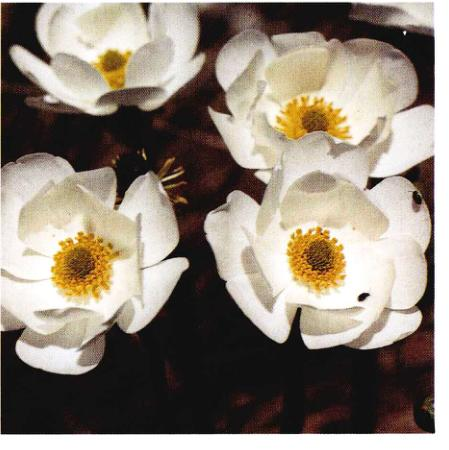
图 22.14 一株新西兰高山毛茛 14 种高山毛茛属植物生长在新西兰的冰河和山脉地区，其中包括 R. lyallii 这种最大的毛茛。
22.4.5 生物多样性的变化历程
尽管真核生物 30 亿年前就已经出现了，物种多样性一直到 5.5 亿年前都没有明显出现。几乎所有现存的动物种类都在一个较短地质学时期内涌现出来，这就是“寒武纪大爆发 (Cambrian explosion)”。除了现在很多生物的祖先外，其他许多生物种类同时也涌现（图 22.16）。这些生物出现后又迅速消失，没有留下任何后代，我们对它们的了解较少。寒武纪爆发仿佛是进化史上一次进化实验和革新，许多生物在短期内涌现，但大部分又匆匆消失了。到底是什么促成了这次爆发仍是一个有很大争议的问题。
1) 物种多样性变化趋势
从寒武纪至今，地球上的物种数已经大大增加了，但其中并没有一个稳定的增长趋势（图 22.17）。经过了一个急剧的增长后，物种数目维持了约 2 亿年不变，随后，物种数开始稳步增长。
Page 14 / 原始页码 454
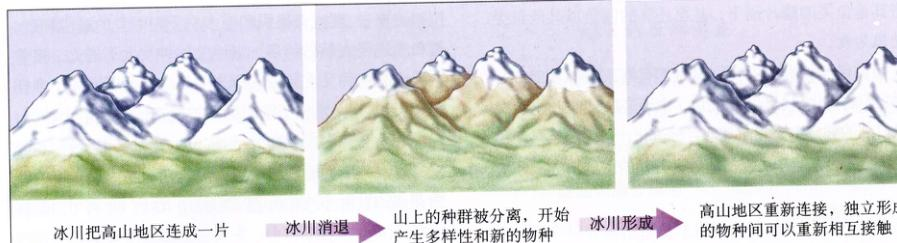
图 22.15 周期性冰川促进新西兰的高山毛茛新种形成 更新世大面积的冰川把高山山脉地带连在了一起。当冰川消退时，这些区域就被隔离离开来，只有当下次一冰川期到来时它们才能再度被连接在一起。在隔离时期，被分隔在各自独立生境中的高山毛茛种群开始分化形成新物种。
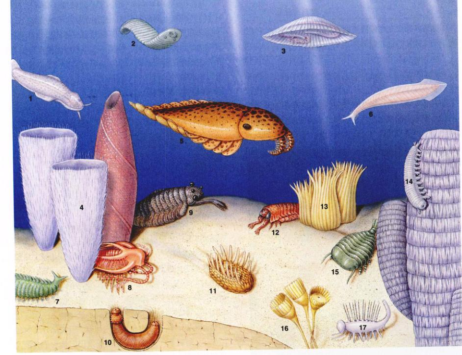
图 22.16 寒武纪大爆发中进化出的各种动物 除了许多现存的物种如昆虫、脊椎动物的祖先外，还出现了许多外观古怪且没有留下后代的生物，如 Wiwaxia、Marrella、Opabinia 和 Hallucigenia (暂定名)。这些物种的自然历史有待进一步研究。
Page 15 / 原始页码 455
然而，在这一稳定增长总趋势中，也出现过几次物种数目急剧减少的大绝灭 (mass extinction) 事件。有 5 次主要的绝灭已被被确定，最严重的一次发生在约 2.5 亿年前的二叠纪末，超过一半的科、多达 96% 的物种在这次大绝灭中消失了。
最著名的、研究最多的一次大绝灭，尽管不是最猛烈的，发生在 6500 万年前的白垩纪末期，大家熟知的恐龙和其他许多生物就是在这在次大绝灭中消失的。最近的研究支持认为，这次大绝灭是由一颗小行星与地球相撞造成的假说。这一假说认为小行星撞击引起了全球性森林大火，同时产生的尘埃遮蔽太阳造成了好几个月的黑暗，从而导致了大量物种绝灭。这次大绝灭还有一点积极的意义：随着恐龙的消失，原先个头较小、并不引人注意的哺乳动物，经过大量进化的辐射，最终形成了现在形形色色的各种生物，包括大象、老虎、鲸以及人类。一般而言，在经历了一次大绝灭以后，生物多样性会迅速反弹，在几万年内达到与以前相当的水平，尽管这时的生物种类跟以前的那些已经不一样了。
2) 第 6 次绝灭
现在的物种数比以往任何时候都要多。但是，人类的活动正使物种数以惊人的速度绝灭。有估计认为，四分之一的物种将在 50 年之内灭绝。这种速度在白垩纪大绝灭以后从未在地球上出现过。
22.4.6 进化的步伐
不同种的生物进化速率并不相同。例如，哺乳动物的进化速度就相对较慢。在相对完备的化石记录基础上，我们可以估计出一种“典型”哺乳动物的存在时间，即从它的产生到绝灭，平均值大约是 20 万年。美国古生物学家 George Gaylord Simpson 指出有些种类的动物，例如肺鱼，进化速度明显比哺乳动物还慢。据 Simpson 的估计，肺鱼在过去的 1.5 亿年内几乎没有发生任何变化。还有些动物进化速度甚至比肺鱼还要慢。
爆发式进化
进化速度不仅在不同类群之间可能不一样，即使在同一类群内也明显随时间而异，某个时期可能明显发展很快，而在另一个时期可能相对较慢。化石记录为这种
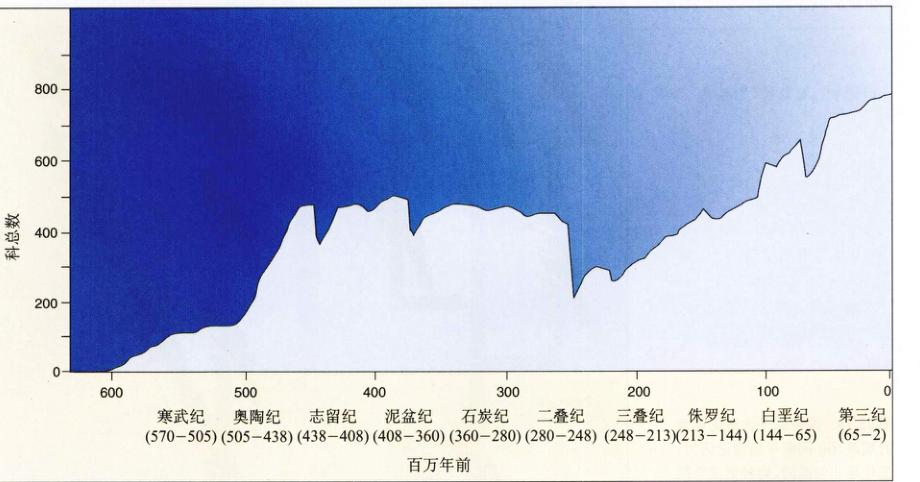
图 22.17 生物多样性随时间的变化 图中为自寒武纪开始的海洋动物种总数变化。因为海洋动物更容易变成化石，所以它们的化石比陆上动物更完备。我们选择科数而不是种数作为纵坐标是因为很多物种的标本只有一件，很难对它的年代做一个较准确的估计。
Page 16 / 原始页码 456
进化速度的差异提供了有力证据。进化学家特别希望了解决造成这种差异的原因。1972 年，纽约自然历史博物馆的古生物学家 Niles Eldredge 和哈佛大学的 Stephen Jay Gould 提出了生物进化的间断平衡 (punctuated equilibrium)。进化革新将产生新的种系，接着这些种系在一段较长的时间内保持不变，即处于平衡状态。最终，一个新的进化爆发，并在化石记录上产生一个断点。Eldredge 和 Gould 将他们的间断平衡理论与达尔文及其他早期进化生物学家的渐变论 (gradualism)作了比较（图 22.18）。
Eldredge 和 Gould 提出：大种群在稳定化选择下将经历长时间不发生明显进化改变的停滞阶段，但当种群迁移到新的地域时将快速进化产生新种。这些迁移的种群数量少，与原来的种群隔离，而且由于建立者效应，它们可能已经和原种群不一样了。这些再加上新环境的选择压力将产生迅速的进化。
不幸的是，实际的划分并不像图面上讨论中那么明显。有些研究很清楚的生物种类如非洲哺乳动物明显是渐变式进化的，而其他一些如海洋苔藓虫类则像间断平衡式进化预测的那样显示出不规则的进化模式。实际上渐变式进化和间断平衡式进化仿佛是相互联系而统一的两个极端。尽管有些生物仅按渐变式进化，有些仅按间断式平衡进化，还有更多生物在进化史的某一时期依据这种方式，而在另一时期依据另一种方式。
22.4.7 生物学物种概念存在的问题
自从 20 世纪 40 年代生物学的物种概念第一次被 Ernst Mayr 提出来，已经成为识别和定义物种方面最有影响力的思想。但最近，很多领域的工作者开始怀疑这个概念到底有多大范围的适用性。
1) 杂交的程度
问题的焦点在于杂交。物种是生殖隔离的，所以种间的杂交应该是很罕见的。如果杂交很普遍，结果将是以下两者之一：或者出现增强效应使隔离机制更完善从而
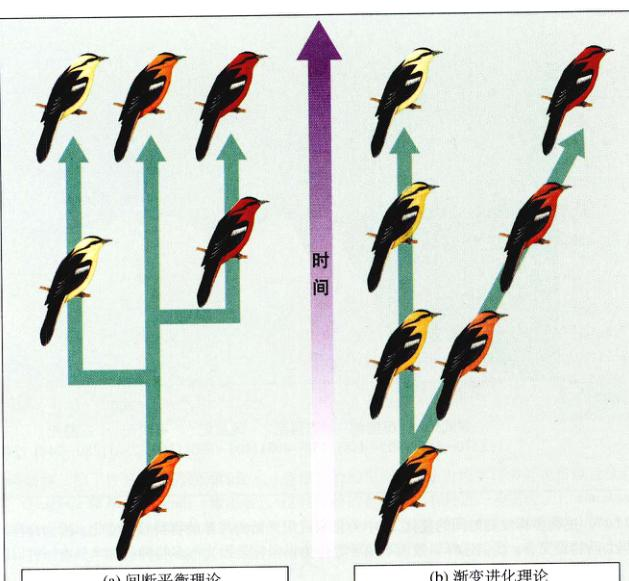
图 22.18 两种关于大进化速度的观点 (a) 间断平衡理论认为，进化是非匀速的，物种形成有跳跃性，各次物种形成间保持长时间的相对稳定；(b) 渐变式进化理论认为，物种形成是匀速的、渐进的。
Page 17 / 原始页码 457
杜绝杂交，或者两个种群混合组成一个均一的基因库。
但是，近几年科学家发现了比意料中多得多的杂交。它们并没有经历增强效应或者丧失其特点。植物学家总是很清楚物种之间可以出现大量的杂交。一项调查表明：在加利福尼亚被抽查的植物当中，超过 50% 并没有严格的遗传隔离。例如，化石记录表明白杨 (balsain poplar) 和棉白杨 (cottonwood) 的表型分化已经 1200 万年了，但直到现在它们还经常产生杂交后代。结果，有很长一段时间植物学家们觉得物种这个概念只适用于动物。
越来越多的证据表明，动物中的杂交现象也并不是那么罕见。最近的一项调查表明自然界 9500 种鸟类中有 10% 在自然条件下会发生杂交。近几年，动物中杂交的例子越来越多。研究详尽的加拉帕戈斯雀又一次为我们提供了例子。Daphne Major 岛上的 3 种雀：中地雀、仙人掌地雀和小地雀，在形态上差别很大而且占据不同的生态位。Peter Grant 和 Rosemary Grant 在过去 20 年的仔细研究中发现，每年平均有 2% 的中地雀和 1% 的仙人掌地雀与其他种类交配，此外，杂交后代在生存和繁殖方面并没有任何劣势。这种基因交换并不是微不足道的，应该会导致这些物种联合为一个多样的大种群，但这些物种仍保持其原来的特征。
2) 其他生物学物种的概念
杂交现象在动物界并不是非常普遍。如前面的鸟类调查中有 90% 的鸟类没有发现杂交现象，出现大规模杂交的就更少了。尽管如此，我们还是很容易会提出疑问：物种的统一性仅仅是依靠生殖隔离来维持吗？
另一种假说认为：种内差异是依靠自然选择来维持的。这种假说认为：每个物种都适应于它特定的那部分生存环境。稳定化选择维持着这种适应，从其他物种引入的等位基因很快会被自然选择清除，所以杂交引起的效应并不明显。
我们在第20章中已看到基因流动和自然选择的相互作用将产生很多种结果。在某些情况下，强烈的选择作用可以压倒基因流动产生的任何效果，但在其他一些情况下，基因流动能使种群中的一些劣势基因保存下来不被淘汰。尽管这种观点对某些物种的存在或许作出出更好的解释，但如果作为一个普遍的解释，它的例外情况并不比原来的生物学物种概念少。
还有许多其他确定物种的标准被提了出来。其中很多只适用于某些特定的生物，没有一种能普遍适用。实际上，物种特征的维持可能不存在单一的解释。考虑到自然界有如此多样的植物、动物、微生物，不同生物中也许有不同的机制也不会值得奇怪了。这是一个研究较活跃的领域，也正说明了进化生物学充满活力的特征。
Page 18 / 原始页码 458
小 结
22.1 物种是进化的基本单位
- 物种是许多生物体的集合，与其他种类存在着一个或更多性状上的差别，在自然环境下下相遇时，不同物种之间不能自由杂交，甚至许多物种之间根本不能交配。
- 物种存在地理差异，但表现型不同的种群之间有过渡类型联系着。
- 1. 给出同域分布的定义。为什么多人认为同域物种形成不可能？
- 2. 生物学物种的定义是什么？
22.2 物种通过生殖隔离保持其遗传特征
- 将物种与种群分开的因素中包括地理隔离、生态隔离、行为隔离、时间隔离和机械隔离，还包括影响配子的结合以及杂种后代正常发育的因素。
- 一些隔离机制（合子前隔离）影响合子的形成，而另一些（合子后隔离）则影响杂种的生存和繁殖。
- 3. 合子前隔离和合子后隔离的区别是什么？
- 4. 阻碍杂种形成和成功的因素有哪些？其中哪些是合子前隔离，哪些是合子后隔离？为什么有人认为“隔离机制”这个词有误导作用？
22.3 关于物种形成，我们已经了解很多
- 生殖隔离的产生可能是由于种群因适应不同的环境而分化，有可能是遭受遗传漂变、建立者效应或者瓶颈效应。
- 当一个物种占领一个栖息地时，自然选择偏爱交配系统的变化，从而使这个物种与原种群之间产生生殖隔离。
- 如果两个物种是不完全的生殖隔离，自然选择将导致更有效的制止杂交隔离机制的出现，这个过程称为“强化效应”。
- 5. 选择怎么引起种群多样化？
- 6. 物种形成过程中涉及了多少基因？
- 7. 杂种什么时候处于劣势？这种劣势的结果是什么？
- 8. 给出多倍体的定义。
22.4 种群簇反映了快速进化
- 当种群分化以占据不同的生态位时，便出现了种群簇。这在岛上能更快出现，因为岛上有许多开放的生境。
- 进化速度在各种生物中不尽相同。一些科学家认为进化是爆发式进行，另一些则认为是渐变式进行的。
- 杂交现象在植物甚至动物中广泛存在。生物学物种的概念并不适用于所有的生物。
- 9. 什么是适应辐射？它在哪种栖息地更容易出现？为什么？
- 10. 渐变式进化理论和间断平衡论有什么区别？
- 11. 为什么生物学的物种概念不再广泛适用？
媒体资源
- 物种形成的介绍
- 异域物种形成
- 同域物种形成
- “科学”专栏：寂寞的 George
- 学生研究：濒危蕨类植物的杂交和进化
- 灭绝
- 进化的趋势
- 技能测验：进化速度